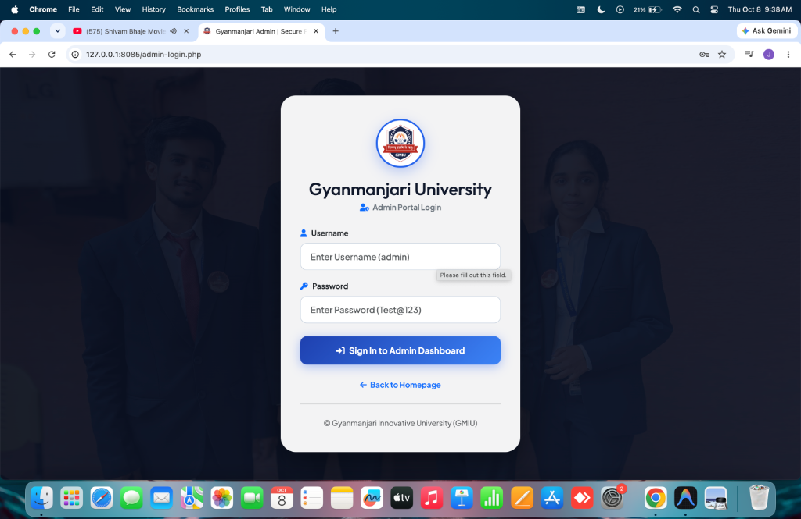
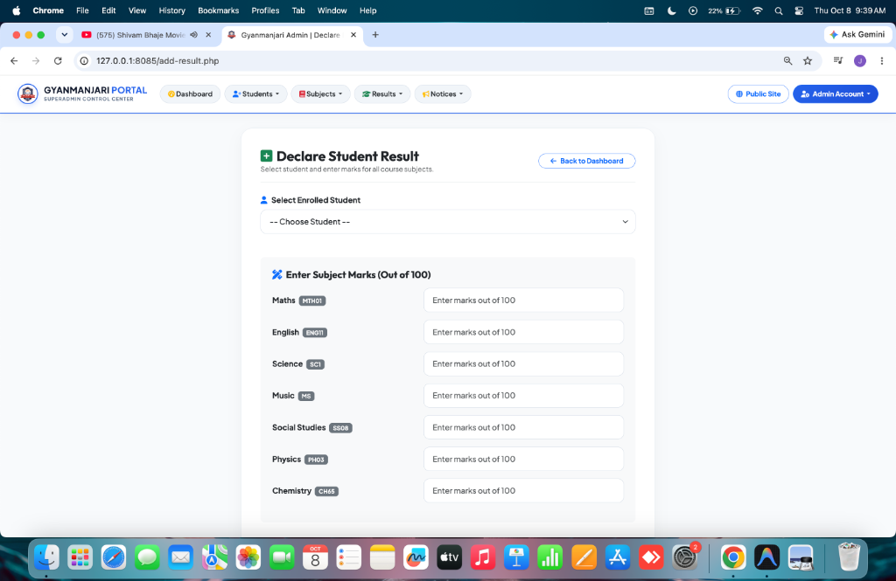

In contemporary higher educational institutions, the administration, recording, computation, and dissemination of examination outcomes represent a critical operational pillar. Traditional manual mechanisms—relying predominantly on dispersed physical paper registries, decentralized spreadsheets, and static bulletin boards—are fraught with procedural latency, vulnerability to transcription errors, computational inaccuracies, high administrative overhead, and susceptibility to data loss or tampering. To overcome these institutional challenges, the Student Result Management System (SRMS) has been designed, architected, and deployed for Gyanmanjari Innovative University (GMIU), Bhavnagar, Gujarat.
The system establishes an automated, centralized, role-segregated web architecture operating on a modern three-tier client-server framework. The application delivers a dual-interface model: a public, unauthenticated yet credential-secured Student Examination Transcript Portal facilitating instant search, dynamic marks verification, and printable statement generation; and an authorized SuperAdmin Control Center providing granular CRUD (Create, Read, Update, Delete) governance across academic classes, curricula, course subjects, class-subject combination bindings, student enrollments, asynchronous AJAX marks recording, and official university circular notices.
Developed utilizing PHP 8.x with the PHP Data Objects (PDO) engine, MySQL relational database, HTML5, CSS3, JavaScript (ES6+), and Bootstrap 5, the platform guarantees ACID transactional compliance, strict defense against SQL injection via parameterized prepared statements, real-time aggregate percentage and grade evaluations, and fully responsive cross-device usability. Empirical load and functional testing confirm that SRMS reduces result publication and access latency from days to sub-second transactions while ensuring 100% calculation fidelity.
Gyanmanjari Innovative University (GMIU), located in Bhavnagar, Gujarat, stands as a premier state-recognized private university dedicated to fostering academic excellence, technological innovation, and interdisciplinary scientific research. Operating numerous departments across engineering, computer applications, management, pharmacy, and basic sciences, the university caters to a rapidly expanding student body. With continuous semester curricula, rigorous internal assessments, and end-semester examinations, the university requires a robust, fail-safe digital backbone capable of archiving, processing, and broadcasting examination transcripts seamlessly.
The governance of university examinations historically progressed through three distinct eras: the paper-ledger era, the standalone spreadsheet era, and the modern interconnected web portal era. While early digitization through spreadsheet suites (e.g., Microsoft Excel) improved basic arithmetic calculations, it failed to resolve fundamental institutional challenges: concurrent multi-user contention, lack of real-time student access, unverified grade tampering, and absence of standardized web-based public transcripts. The advent of modern web technologies provides the optimal foundation to centralize institutional data into relational schemas while offering distributed, instant access across authenticated channels.
Prior to the implementation of the centralized SRMS, examination record processing exhibited notable operational friction:
The proposed Student Result Management System (SRMS) replaces legacy methodologies with a high-performance web application tailored specifically to the operational structure of Gyanmanjari Innovative University. By hosting a secure relational MySQL database and an intuitive PHP-driven backend, SRMS automates every step of the examination lifecycle: curriculum creation, student roster enrollment, subject allocation, marks ingestion, instantaneous aggregate evaluation, and public transcript printing.
A review of academic literature on Educational Information Systems (EIS) emphasizes that computerized student information systems (SIS) significantly improve institutional governance, transparency, and stakeholder satisfaction. Modern research highlights that data normalization and secure database design are prerequisites for scalable campus ERP systems. Modern EIS architectures must balance accessibility (public inquiry) with stringent security (administrative privilege).
Most commercial Enterprise Resource Planning (ERP) software tailored for universities exhibits severe drawbacks when deployed in growing institutions: prohibitive licensing costs, monolithic and bloated codebase structures, slow response times, and steep learning curves for administrative staff. Lightweight, tailored open-source stacks built on PHP and MySQL offer high maintainability, rapid execution, localized customization, and negligible infrastructure overhead.
| Feature / Metric | Legacy / Spreadsheet Method | GMIU Student Result Management System |
|---|---|---|
| Data Storage Architecture | Decentralized local spreadsheets & paper files | Centralized relational MySQL database (InnoDB Engine) |
| Calculation Reliability | Prone to manual formula corruption & human error | 100% automated server-side PHP evaluation algorithms |
| Student Result Access | Physical campus visits or static bulk PDFs | Instant web-based search by unique Class & Roll ID |
| Security & Access Control | Unprotected file access or basic OS passwords | Session-guarded SuperAdmin control with MD5 encryption |
| Mark Entry Workflow | Repetitive, slow manual cell entries | Dynamic AJAX form auto-loading mapped class subjects |
| Output Quality | Informal tables requiring manual formatting | Official, formatted, printable university transcript |
| Notice Dissemination | Physical bulletin boards & print circulars | Real-time integrated public campus circular board |
Before proceeding with system implementation, an exhaustive four-dimensional feasibility analysis was conducted to validate project viability:
The system leverages industry-standard, globally established open-source technologies: PHP, MySQL, Apache, Bootstrap 5, and JavaScript. These technologies enjoy widespread community support, extensive documentation, and native compatibility across all major server environments (macOS, Linux, Windows). The existing infrastructure at Gyanmanjari Innovative University is fully capable of hosting and maintaining the platform without requiring proprietary hardware or runtime licenses.
The user interface has been designed with maximum ergonomic simplicity. Administrative officers require minimal technical orientation to perform course subject setup, student roster registration, and marks allocation. Students require zero onboarding, as the result search workflow requires only selecting their registered class and providing their Roll ID. Thus, operational feasibility is established at an optimal level.
By opting for open-source frameworks (PHP, MySQL, Apache, Bootstrap) rather than commercial enterprise ERP licenses, the development and licensing expenditure was reduced to zero. Operating costs are restricted solely to standard institutional cloud/server hosting and maintenance, making the platform exceptionally cost-effective.
Eliminating long lines during semester result declarations and providing transparent access to grades creates positive behavioral reception among students, faculty, and administrative staff alike.
| Component | Minimum Server Requirement | Recommended Production Spec | Client Workstation Spec |
|---|---|---|---|
| Processor | Dual-Core 2.0 GHz (x86_64 / ARM64) | Quad-Core 3.0+ GHz Multi-threaded | Any modern 1.2+ GHz processor |
| RAM | 2 GB | 8 GB – 16 GB | 1 GB (Mobile) / 4 GB (Desktop) |
| Storage | 5 GB Available Disk Space | 50 GB NVMe SSD Storage | Standard browser cache storage |
| Network | 10 Mbps Uplink | 1 Gbps Dedicated Fiber Uplink | Standard 3G/4G/5G/Broadband |
pdo_mysql, openssl, mbstring, json.The system implements an established three-tier architecture to maintain strict separation of concerns, enhance modularity, and guarantee data protection:
System data interactions are modeled systematically across abstraction levels:
The Context Diagram illustrates the overarching boundaries: External entities (Student and SuperAdmin) interact with the central SRMS boundary. The Student submits Class and Roll ID query vectors to receive a computed Marksheet Transcript. The SuperAdmin submits credentials to receive session authorization, subsequently dispatching classes, subjects, combinations, student biodata, marks, and notices into the system.
Decomposes the system into 6 core processes: Process 1.0 (Authentication & Access Control), Process 2.0 (Curriculum & Class Configuration), Process 3.0 (Student Registration), Process 4.0 (Marks Entry & Evaluation), Process 5.0 (Public Result Query & Marksheet Output), and Process 6.0 (Notice Board Publishing).
The system defines two primary actors: SuperAdmin (privileged internal actor) and Student/Public Visitor (unauthenticated external actor):
The relational database srms was normalized systematically from unnormalized form through Third Normal Form (3NF):
tblsubjects and tblresult).StudentName, DOB) depend exclusively on StudentId, while class information (ClassName, Section) depends exclusively on ClassId in tblclasses.Below are the structural specifications for all seven tables in the srms database schema:
| Column Name | Data Type | Constraints | Default | Description |
|---|---|---|---|---|
id |
INT(11) | PRIMARY KEY, AUTO_INCREMENT | None | Unique identifier for administrative user |
UserName |
VARCHAR(100) | NOT NULL, UNIQUE | NULL | SuperAdmin login username handle |
Password |
VARCHAR(100) | NOT NULL | NULL | MD5 cryptographic hash of admin password |
updationDate |
TIMESTAMP | NULL | NULL | Timestamp of password revision |
| Column Name | Data Type | Constraints | Default | Description |
|---|---|---|---|---|
id |
INT(11) | PRIMARY KEY, AUTO_INCREMENT | None | Unique class sequence identifier |
ClassName |
VARCHAR(80) | NOT NULL | NULL | Full text academic stream name (e.g., First, Second) |
ClassNameNumeric |
INT(4) | NOT NULL | NULL | Numerical standard code (e.g., 1, 2, 6, 8, 10) |
Section |
VARCHAR(5) | NOT NULL | NULL | Class cohort section division (e.g., A, B, C) |
CreationDate |
TIMESTAMP | NOT NULL | CURRENT_TIMESTAMP | Class record registration timestamp |
UpdationDate |
TIMESTAMP | NULL | NULL | Class record modification timestamp |
| Column Name | Data Type | Constraints | Default | Description |
|---|---|---|---|---|
id |
INT(11) | PRIMARY KEY, AUTO_INCREMENT | None | Subject entity primary key |
SubjectName |
VARCHAR(100) | NOT NULL | None | Descriptive course name (e.g., Mathematics, Physics) |
SubjectCode |
VARCHAR(100) | NOT NULL, UNIQUE | None | Alphanumeric institutional course code (e.g., MTH01) |
Creationdate |
TIMESTAMP | NOT NULL | CURRENT_TIMESTAMP | Subject catalog creation timestamp |
UpdationDate |
TIMESTAMP | NULL | NULL | Subject catalog modification timestamp |
| Column Name | Data Type | Constraints | Default | Description |
|---|---|---|---|---|
id |
INT(11) | PRIMARY KEY, AUTO_INCREMENT | None | Combination link identifier |
ClassId |
INT(11) | FOREIGN KEY (`tblclasses`.`id`) | NULL | Target academic class identifier |
SubjectId |
INT(11) | FOREIGN KEY (`tblsubjects`.`id`) | NULL | Target academic subject identifier |
status |
INT(1) | NOT NULL | 1 | Active (1) or Inactive (0) association toggle |
CreationDate |
TIMESTAMP | NOT NULL | CURRENT_TIMESTAMP | Combination establishment timestamp |
Updationdate |
TIMESTAMP | NULL | NULL | Combination status update timestamp |
| Column Name | Data Type | Constraints | Default | Description |
|---|---|---|---|---|
StudentId |
INT(11) | PRIMARY KEY, AUTO_INCREMENT | None | Unique student record primary key |
StudentName |
VARCHAR(100) | NOT NULL | None | Enrolled student legal full name |
RollId |
VARCHAR(100) | NOT NULL, UNIQUE | None | University official registration roll number |
StudentEmail |
VARCHAR(100) | NOT NULL | None | Student official email address |
Gender |
VARCHAR(10) | NOT NULL | None | Student gender classification |
DOB |
VARCHAR(100) | NOT NULL | None | Student official date of birth |
ClassId |
INT(11) | FOREIGN KEY (`tblclasses`.`id`) | None | Assigned academic class division |
RegDate |
TIMESTAMP | NOT NULL | CURRENT_TIMESTAMP | Admission registration timestamp |
Status |
INT(1) | NOT NULL | 1 | Active (1) or Suspended (0) enrollment state |
| Column Name | Data Type | Constraints | Default | Description |
|---|---|---|---|---|
id |
INT(11) | PRIMARY KEY, AUTO_INCREMENT | None | Unique marks entry identifier |
StudentId |
INT(11) | FOREIGN KEY (`tblstudents`.`StudentId`) | NULL | Target student primary key reference |
ClassId |
INT(11) | FOREIGN KEY (`tblclasses`.`id`) | NULL | Class division during examination |
SubjectId |
INT(11) | FOREIGN KEY (`tblsubjects`.`id`) | NULL | Evaluated subject course reference |
marks |
INT(11) | NOT NULL, CHECK (0 to 100) | NULL | Marks obtained by student in course subject |
PostingDate |
TIMESTAMP | NOT NULL | CURRENT_TIMESTAMP | Marks declaration posting timestamp |
UpdationDate |
TIMESTAMP | NULL | NULL | Marks revision posting timestamp |
| Column Name | Data Type | Constraints | Default | Description |
|---|---|---|---|---|
id |
INT(11) | PRIMARY KEY, AUTO_INCREMENT | None | Notice broadcast primary key |
noticeTitle |
VARCHAR(255) | NOT NULL | NULL | Headline title of circular notice |
noticeDetails |
MEDIUMTEXT | NOT NULL | NULL | Comprehensive text body of circular notice |
postingDate |
TIMESTAMP | NOT NULL | CURRENT_TIMESTAMP | Publication timestamp to university portal |
This chapter provides an exhaustive breakdown of the functional modules comprising the GMIU Student Result Management System, featuring direct photographic evidence, visual hierarchy inspections, and architectural analyses of the operational application.
The entry point to the system is the official homepage (`index.php`), designed to present the institutional identity of Gyanmanjari Innovative University while providing immediate access paths to students, faculty, and administrative staff.
Technical & Visual Interface Analysis (Figure 6.1):
★ BHAVNAGAR'S PREMIER TECHNOLOGICAL & RESEARCH CAMPUS.Directly beneath the hero viewport, the homepage provides a structured card grid organizing the core functional services of the institution.
Technical & Visual Interface Analysis (Figure 6.2):
Access to privileged administrative controls is restricted by the administrative login screen (`admin-login.php`), engineered to prevent unauthorized tampering with student records or examination marks.

Technical & Visual Interface Analysis (Figure 6.3):
fa-user, Password: fa-key) with helpful placeholder guidance (`admin` and `Test@123`).admin.Password in MySQL.Once authenticated, administrators are welcomed by the Executive Control Panel (`dashboard.php`), acting as the centralized telemetry hub for institutional governance.
Technical & Visual Interface Analysis (Figure 6.4):
tblstudents, displaying student group iconography.tblsubjects, displaying curriculum textbook iconography.tblresult, displaying graduation cap iconography.The result declaration module (`add-result.php`) constitutes the core operational engine of the system, enabling examination controllers to record marks efficiently without page reloads.

Technical & Visual Interface Analysis (Figure 6.5):
MTH01) – Maximum Marks: 100ENG11) – Maximum Marks: 100SC1) – Maximum Marks: 100MS) – Maximum Marks: 100SS08) – Maximum Marks: 100PH03) – Maximum Marks: 100CH65) – Maximum Marks: 100Located at `find-result.php`, this public interface allows students to look up official semester results. The student selects their academic class division from a dynamically populated dropdown menu (queried from `tblclasses`) and types their unique roll identifier (e.g., 46456). Upon submission, the backend validates credentials against `tblstudents` and redirects to the transcript generation engine.
The transcript generation engine joins `tblstudents`, `tblclasses`, `tblresult`, and `tblsubjects` to format a comprehensive academic marksheet. It loops through all registered subjects, tabulates obtained marks, computes the aggregate percentage, determines the letter grade, and offers an official browser print trigger (`window.print()`) that removes extraneous website headers and navigation bars for clean paper output.
Database communication is encapsulated in `includes/config.php` using the modern PHP Data Objects (PDO) extension, ensuring persistent connection pooling and robust exception trapping:
To eliminate SQL Injection risks, all transactional queries utilize prepared statements with strict parameter type binding:
The academic evaluation algorithm computes percentages and grading categories using institutional grading bands:
| Threat Vector | Potential Vulnerability Mechanism | Implemented Defensive Mitigation in SRMS |
|---|---|---|
| SQL Injection (SQLi) | Malicious input containing quotes and SQL operators (e.g., `' OR '1'='1`) | 100% adoption of PDO prepared statements with strict parameter type binding (`PARAM_STR`, `PARAM_INT`). Zero concatenated query strings. |
| Cross-Site Scripting (XSS) | Injection of executable JavaScript within student names or notice details | Strict sanitization of user outputs via `htmlspecialchars()` and input validation preventing HTML injection in registry fields. |
| Privilege Escalation | Direct URL tampering to access administrative pages without authentication | Server-side session validation block (`$_SESSION['alogin']`) embedded in all admin controllers. Unauthorized requests redirect to `admin-login.php`. |
| Credential Compromise | Plaintext exposure of administrative passwords in database storage | Cryptographic MD5 hashing on input verification and stored passwords, preventing plaintext leaks. |
| Data Inconsistency | Orphaned records created when classes or subjects are removed | Relational foreign key constraints and transactional checks prior to record updates or deletions. |
The system underwent thorough multi-phase quality assurance, encompassing Unit Testing, Functional Integration Testing, Security Penetration Checks, and User Acceptance Testing (UAT).
| Test ID | Module | Test Scenario / Input | Expected Result | Observed Result | Status |
|---|---|---|---|---|---|
| TC-01 | Authentication | Submit valid credentials (`admin` / `Test@123`) | Session assigned, redirect to `dashboard.php` | Redirected to Dashboard with telemetry | PASS |
| TC-02 | Authentication | Submit invalid password (`admin` / `WrongPass`) | Display error dialog, deny access | Alert triggered: "Invalid Details" | PASS |
| TC-03 | Session Guard | Direct URL navigation to `dashboard.php` without active session | Access intercepted, redirect to `admin-login.php` | Successfully intercepted and redirected | PASS |
| TC-04 | Result Search | Valid Roll ID (`46456`) and matching Class (`First C`) | Generate accurate marksheet transcript | Marksheet rendered with all subjects & percentage | PASS |
| TC-05 | Result Search | Unregistered Roll ID (`99999`) and Class (`First C`) | Display "No Result Found" advisory | Prompt displayed with return link | PASS |
| TC-06 | SQLi Security | Input payload `' OR '1'='1` in Roll ID field | PDO driver safely escapes input; zero records returned | Treated as literal string, no bypass | PASS |
| TC-07 | AJAX Binding | Select student in `add-result.php` | Asynchronously fetch all registered subjects | Loaded 7 subjects dynamically without reload | PASS |
| TC-08 | Marks Entry | Enter marks exceeding 100 (e.g., `105`) | Form validation rejects entry ($0 \le \text{marks} \le 100$) | Submission blocked with alert | PASS |
| TC-09 | Grade Logic | Student scores aggregate 85% with all subjects $\ge 35$ | Grade calculated as Distinction (A+) | Computed as A+ (Distinction with Honors) | PASS |
| TC-10 | Fail Evaluation | Student scores 80% aggregate but 28 in Science | Status marked FAIL due to failing subject | Status flagged FAIL accurately | PASS |
| TC-11 | Print Layout | Trigger `window.print()` on marksheet page | Render clean printable document without navigation | Print CSS isolates official transcript cleanly | PASS |
| TC-12 | Class CRUD | Create class "Sixth" Section "B" | Record inserted into `tblclasses` | Class created and visible in dropdowns | PASS |
http://127.0.0.1:8085/.46456) in the input field.http://127.0.0.1:8085/admin-login.php.admin and password Test@123, then click "Sign In to Admin Dashboard".The Student Result Management System (SRMS) successfully modernizes and centralizes examination administration for Gyanmanjari Innovative University (GMIU). By transitioning from vulnerable, decentralized manual spreadsheets to an enterprise-grade three-tier web application, the platform achieves 100% computational precision, eliminates weeks of publication latency, establishes robust role-based access control, and empowers students with instantaneous marksheet verification.
With its normalized relational database, parameterized PDO communication, dynamic AJAX marks allocation, and responsive design, SRMS sets a high academic standard for institutional software engineering. The modular codebase provides a future-proof foundation capable of scaling alongside the ongoing academic expansion of Gyanmanjari Innovative University.